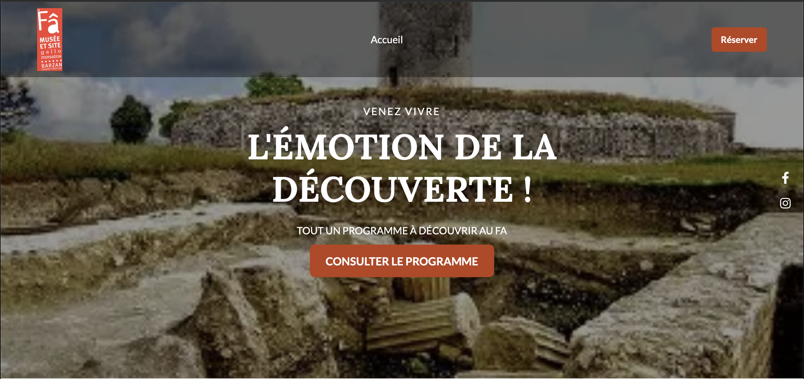
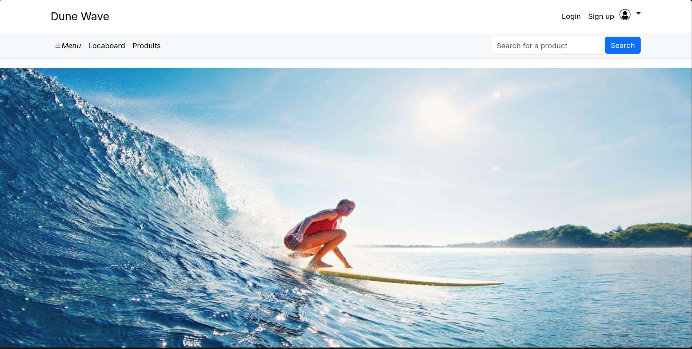
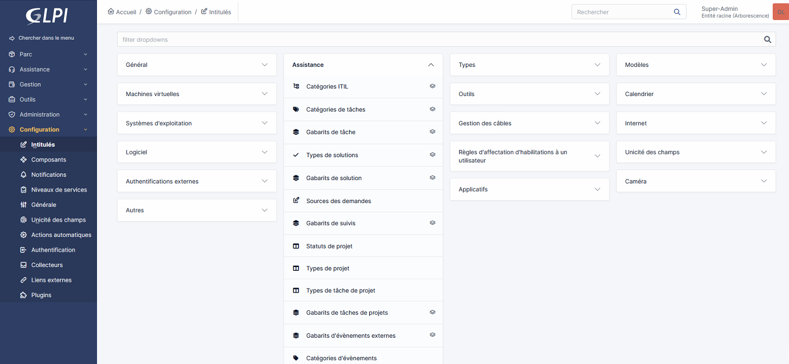

Mes Projets
Voici une sélection de projets sur lesquels j'ai travaillé. Ils illustrent mes compétences en développement et ma capacité à mener à bien des projets concrets, de la conception au déploiement.
Billetterie du Fâ

Application de réservation de billets pour le site archéologique du Fâ (Barzan).
En savoir plusDunewave – Locaboard

Plateforme de gestion de location de planches de surf, réalisée en groupe en début de formation.
En savoir plus Voir le siteCanisPro – Gestion des cours des chiens

Application web de gestion des cours des chiens avec architecture MVC, pattern DAO, base MySQL et interface HTML/CSS.
En savoir plusTP GLPI – Gestion des tickets d'assistance

TP réalisé en cours : découverte de l'outil GLPI pour la gestion des tickets d'assistance, des incidents et des demandes.
En savoir plusVisiteurDAO – Gestion des visiteurs

Application Java de gestion des visiteurs avec architecture MVC, pattern DAO, base SQLite et interface Swing.
En savoir plusJournée d'intégration SIO

Application web de gestion de la journée d'intégration du BTS SIO avec architecture MVC, pattern DAO, base MySQL et interface HTML/CSS.
En savoir plusGestion de Versions avec Git
Un projet réalisé dans le cadre de mon BTS SIO, mettant en œuvre la gestion de versions avec Git pour le suivi des modifications et la collaboration.
En savoir plusStage 1ère année – Cabinet comptable
Modernisation de l'identité numérique d'un cabinet comptable : maquettes Figma, intégration WordPress avec Elementor, SEO.
En savoir plusStage 2ème année – Boucherie Agadir
Développement d'un site dynamique avec système Click & Collect, authentification PHP et gestion de base de données MySQL.
En savoir plus